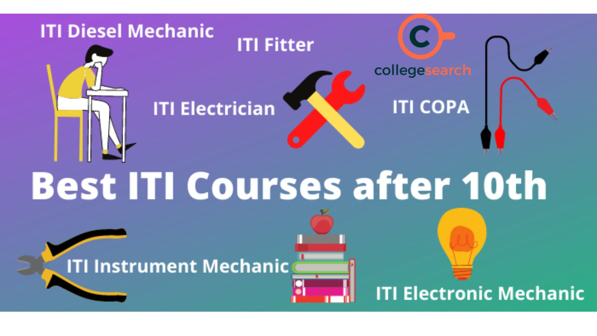

ITI Courses
Industrial Training Institute (ITI)
The ITI program focuses on equipping students with practical skills in various trades. It is designed for students who want to pursue careers in technical fields without completing traditional academic education.
What is ITI?
Industrial Training Institutes (ITI) offer specialized training in various trades such as electrician, mechanic, plumber, fitter, and many more. These courses focus on practical, hands-on skills that prepare students for specific technical roles.
ITI programs typically last for 1 to 2 years, depending on the trade, and combine classroom education with practical training. The goal is to provide students with job-ready skills that can be directly applied in the workforce.
The courses are designed in collaboration with industries, ensuring that students learn the skills and techniques that are in high demand. ITI programs are recognized by both the government and private industries, making graduates highly employable.
Students who complete ITI courses can either start working in the industry immediately or choose to further their education by pursuing diplomas or engineering degrees in related fields.
Key Benefits of ITI
The primary benefit of pursuing an ITI course is gaining practical skills that are directly relevant to specific industries. ITI training equips students with the expertise needed for jobs in fields like electrical work, plumbing, and machinery repair.
Students receive hands-on experience, which makes them ready for employment right after completion. This is a significant advantage over traditional education programs that may not provide such focused practical training.
ITI courses are relatively short in duration, typically taking 1-2 years, allowing students to enter the workforce much sooner than those pursuing longer academic degrees. This leads to early career growth and earning potential.
Since ITI programs are recognized by various government and private sector industries, students are guaranteed job opportunities in many technical fields. ITI graduates are highly sought after for their skill set and practical experience.
Furthermore, ITI graduates can also work as independent contractors, offering their services in fields like electrical repairs, plumbing, and mechanical repairs, which adds an entrepreneurial edge to their career.
Popular ITI Trades
ITI offers a wide range of trade options, each tailored to specific technical roles. Some of the most popular ITI trades include:
Electrician: This trade focuses on the installation, maintenance, and repair of electrical systems. Electricians are in high demand for both residential and commercial projects.
Mechanic: Mechanic training includes the repair and maintenance of vehicles and machinery. Mechanics are essential for industries such as automotive, construction, and manufacturing.
Plumber: ITI plumbing courses train students in the installation and repair of plumbing systems. Plumbers are always needed for construction and building maintenance projects.
Fitter: Fitters are trained in assembling machinery and parts. This trade is widely used in industries like manufacturing, construction, and metalworking.
Other trades include welding, computer hardware, carpentry, and refrigeration, offering various career paths depending on the interests and aptitude of the students.
Career Opportunities After ITI
Graduates of ITI programs have access to numerous job opportunities in technical fields. Some of the key roles include:
Technician: ITI graduates can work as technicians in fields like automotive, electrical, and mechanical maintenance. They support engineers and carry out hands-on work in their respective fields.
Maintenance Worker: Maintenance workers are employed in industries such as manufacturing, construction, and hospitality. Their job is to ensure that equipment and infrastructure remain in good working order.
Repair Expert: ITI graduates can become repair specialists, offering their services in fields like plumbing, electrical repair, and mechanical repair. They can either work for companies or start their own businesses.
Service Provider: Many ITI graduates also work as service providers, offering specialized skills in areas like electrical installation, plumbing, and HVAC systems. They may work as freelancers or in small businesses.
Moreover, ITI graduates can pursue further studies or certifications to enhance their qualifications, potentially leading to supervisory roles or positions in engineering and management in the future.
How to Pursue ITI?
To enroll in an ITI program, students must have completed their 10th grade or equivalent examination. Some ITIs may also offer courses for students with a minimum of 8th grade education depending on the trade.
After completing the application process, students are admitted based on their performance in the entrance exam or merit-based selection, depending on the institution.
ITI programs typically last for 1-2 years, depending on the trade chosen. During this time, students receive both theoretical and practical training, including hands-on work in workshops and industry placements.
Upon completion, students are awarded a certificate that is recognized by both government and private sectors, making them eligible for various job roles in their chosen trade.
Some ITIs also offer further education options, such as vocational degrees or lateral entry into diploma courses, to help students advance in their technical careers.
How to Achieve Your Goals
- Choose a trade that matches your interest, like Electrician, Fitter, or Welder.
- Complete a 1-2 year course at a government-recognized ITI.
- Consider apprenticeship programs for practical experience.
Future Jobs and Opportunities
- Tradesman, Technician in factories or workshops.
- Government jobs in railways and public works departments.
- Self-employment opportunities in skilled trades.